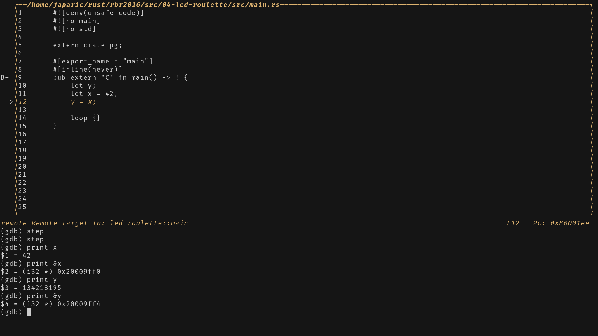

Boston Embdded Systems Meetup: Bring and Blink
Discover the world of microcontrollers through Rust!
This book is an edited version for the Boston Embedded Systems Meetup and is
based on japaric's discovery book.
This book is for an "introductory tutorial" on microcontroller-based "embedded
systems" that uses Rust as the teaching language rather than the usual C/C++.
Scope
The following topics will be covered in this tutorial:
-
How to write, build, flash and debug an "embedded" (Rust) program.
-
How to make LEDs blink, print messages over JTAG using itm, and some basic Rust.
Approach
-
Beginner friendly. No previous experience with microcontrollers or embedded systems is required.
-
Hands on. Plenty of exercises to put the theory into practice. You will be doing most of the work here.
-
Tool centered. We'll make plenty use of tooling to ease development. "Real" debugging, GDB, and logging will be introduced early on. Using LEDs as a debugging mechanism has no place here.
Non-goals
What's out of scope for this tutorial:
-
Teaching Rust in depth. There is plenty of material, and the officia Rust Programming Language Book is a great place to start.
-
Being a comprehensive introduction about electric circuit theory or electronics. We'll just cover the minimum required to understand how some devices work (if at all).
-
Covering Rustic, low-level details. We won't be talking about linker scripts, the boot process or how to glue those two into a minimally working Rust program. The Copper book has information on those topics though.
-
Working with peripherals or anything more complicated than LEDs and basic Rust programs the Discovery book is a great place to go after this book and will keep you going. (Thanks japaric!)
-
Being a general reference for programming microcontrollers. The intent is to get a handful of people up and running in a short period of time! Depth is not our aim!
Thanks To:
- Canopy: for allowing us to use their space.
- japaric: for writing a majority of the content.
Original Sponsors of the Discovery book
This tutorial is based on japric's Discovery book which was sponsored by:

Many thanks to integer 32 for sponsoring me to continue working on this book! Please give them lots of work (they do Rust consulting!) so they'll have no choice but to hire more Rustaceans <3.
Background
What's a microcontroller?
A microcontroller is a system on a chip. Whereas your laptop is made up of several discrete components: a processor, RAM sticks, a hard drive, an ethernet port, etc.; a microcontroller has all those components built into a single "chip" or package. This makes it possible to build systems with minimal part count.
What can you do with a microcontroller?
Lots of things! Microcontrollers are the central part of systems known as embedded systems. These systems are everywhere but you don't usually notice them. These systems control the brakes of your car, wash your clothes, print your documents, keep you warm, keep you cool, optimize the fuel consumption of your car, etc.
The main trait of these systems is that they operate without user intervention even if they expose a user interface like a washing machine does; most of their operation is done on their own.
The other common trait of these systems is that they control a process. And for that these systems usually have one or more sensors and one or more actuators. For example, an HVAC system has several sensors, thermometers and humidy sensors spread across some area, and several actuators as well, heating elements and fans connected to ducts.
When should I use a microcontroller?
All these application I've mentioned, you can probably implement with a Raspberry Pi, a computer that runs Linux. Why should I bother with a microcontroller that operates without an OS? Sounds like it would be harder to develop a program.
The main reason is cost. A microcontroller is much cheaper than a general purpose computer. Not only the microcontroller is cheaper; it also requires much less external electrical components to operate. This makes Printed Circuit Boards (PCB) smaller and cheaper to design and manufacture.
The other big reason is power consumption. A microcontroller consumes orders of magnitude less power than a full blown processor. If your application will run on batteries that makes a huge difference.
And last but not least: (hard) "real time" constraints. Some processes require their controllers to respond to some events within some time interval (e.g. a quadcopter/drone hit by a wind gust). If this "deadline" is not met, the process could end in catastrophic failure (e.g. the drone crashes to the ground). A general purpose computer running a general purpose OS has many services running in the background. This makes it hard to guarantee execution of a program within tight time constraints.
When should I not use a microcontroller?
Where heavy computations are involved. To keep their power consumption low, microcontrollers have very limited computational resources available to them. For example, some microcontrollers don't even have hardware support for floating point operations. On those devices, performing a simple addition of single precision numbers can take hundreds of CPU cycles.
Why use Rust and not C?
Hopefully, I don't need to convince you here as you are probably familiar with the language differences between Rust and C. One point I do want to bring up is package management. C lacks an official, widely accepted package management solution whereas Rust has Cargo. This makes development much easier. And, IMO, easy package management encourages code reuse because libraries can be easily integrated into an application which is also a good thing as libraries get more "battle testing".
Why should I not use Rust?
Or why should I prefer C over Rust?
The C ecosystem is way more mature. Off the shelf solution for several problems already exist. If you need to control a time sensitive process, you can grab one of the existing commercial Real Time Operating Systems (RTOS) out there and solve your problem. There are no commercial, production-grade RTOSes in Rust yet so you would have to either create one yourself or try one of the ones that are in development.
Knowledge Requirements
The main "knowledge requirement" for following along with this tutorial is to
know some Rust. To get "some" knowledge I recommend walking through the
Guessing Game tutorial
and reading through some of the official The Rust Programming Language Book.
This should give you a sufficient base of knowledge.
Hardware Requirements
Here are the materials we will be using:
- A STM32 NUCLEO-F303RE development board. Which is a simple, but powerful Arduino-compatible development board.
- We'll refer to this board as "F3" throughout this book.
- Specs:
-
A STM32F303RET6 microcontroller. This microcontroller has
-
A single core ARM Cortex-M4F processor with hardware support for single precision floating point operations and a maximum clock frequency of 72 MHz.
-
512 KiB of "Flash" memory. (1 KiB = 1024 bytes)
-
80 KiB of RAM.
-
many "peripherals": timers, GPIO, I2C, SPI, USART, etc.
-
lots of "pins" that are exposed in the two lateral "headers".
-
Arduino-compatible headers.
-
IMPORTANT This microcontroller operates at (around) 3.3V.
-
A second microcontroller: a STM32F103CBT. This microcontroller is actually part of an on-board programmer and debugger named ST-LINK and is connected to the USB port named "USB ST-LINK".
-
- Datasheet
- Nucleo User Manual
- One mini-B USB cables. One is required to make the STM32 NUCLEO board work.

NOTE These are not the USB cables that ship with pretty much every Android phone; those are micro USB cables. Make sure you have the right thing!
- OPTIONAL. Bring some shields, LEDS, and wires to play around with!
FAQ: Wait, why do I need this specific hardware?
It makes my life and yours much easier.
The material is much, much more approachable if we don't have to worry about hardware differences. Trust me on this one.
FAQ: Can I follow this material with a different development board?
Maybe? It depends mainly on two things: your previous experience with microcontrollers and/or whether there already exists a high level crate, like the f3, for your development board somewhere.
Regardless, with a different development board, this text would lost most if not all its beginner friendliness and "easy to follow"-ness, IMO.
If you have a different development board and you don't consider yourself a total beginner, you are better off reading the Copper book which approaches the Rust on microcontrollers topic in a bottom-up and device agnostic way. Or, maybe even just read the source of the f3 crate.
Setting up your development environment
This section describes the common steps needed to set up rust and supporting tools. Before following this section you should follow the OS specific sections:
Requirements
We will use the following programs and tools. Where a minimum version is not specified, any recent version should work but we have listed the version we have tested.
- cargo &
rustc(>= rust nightly 1.14). - Xargo >= 0.2.x.
itmdump>= 0.1.1- OpenOCD >=0.8. Tested version: 0.9.0
- An
arm-none-eabi-gcctoolchain. Including:
arm-none-eabi-gcc. Tested versions: 4.8, 5.2 and 6.2arm-none-eabi-gdb. Version 7.12 or newer highly recommended. Tested versions: 7.10, 7.11 and 7.12
Next, follow OS-agnostic installation instructions for a few of the tools:
rustc & Cargo
The preferred way to install rust and cargo is to follow the instructions
at https://www.rust-lang.org/ for your particular platform. You should use
the instructions which install rustup. Afterwards we will need to download
and install the nightly build which is required for embedded development
for the time being. To do that:
$ rustup default nightly
$ rustup component add rust-src # for Xargo later.
Xargo
You can install Xargo in two different ways:
- By grabbing a binary release and placing it somewhere in your
$PATH.$HOME/.cargo/binis a good place to install it to. Do make sure that the binary release you "installed" actually works by executing the following command:
$ xargo -V
xargo 0.2.0 (bd8ebc4 2016-10-16)
cargo 0.13.0-nightly (a8baa5b 2016-10-15)
- Or, by building it yourself with the following command:
$ cargo install xargo
$ xargo -V
itmdump
$ cargo install itm
OS specific instructions
If you have not followed the platorm specific instructions please follow them now:
Linux
Here are the installation commands for a few Linux distributions.
REQUIRED packages
- Ubuntu 16.04 or newer / Debian Jessie or newer:
$ sudo apt-get install \
gcc-arm-none-eabi \
gdb-arm-none-eabi \
git \
openocd
- Fedora 23 or newer:
$ sudo dnf install \
arm-none-eabi-gcc-cs \
arm-none-eabi-gdb \
git \
openocd
- Arch Linux
$ sudo pacman -S \
arm-none-eabi-gcc \
arm-none-eabi-gdb \
git \
openocd
udev rules
Ubuntu/Debian
These rules let you use USB devices like the STM32F3's built in JTAG debugger
without root privilege, i.e. sudo. To do this create the following file in
/etc/udev/rules.d:
$ cat >/etc/udev/rules.d/99-openocd.rules << EOL
# STM32F3DISCOVERY rev A/B - ST-LINK/V2
ATTRS{idVendor}=="0483", ATTRS{idProduct}=="3748", GROUP="uucp"
# STM32F3DISCOVERY rev C+ - ST-LINK/V2-1
ATTRS{idVendor}=="0483", ATTRS{idProduct}=="374b", GROUP="uucp"
EOL
Now check the results:
$ cat /etc/udev/rules.d/99-openocd.rules
# STM32F3DISCOVERY rev A/B - ST-LINK/V2
ATTRS{idVendor}=="0483", ATTRS{idProduct}=="3748", GROUP="uucp"
# STM32F3DISCOVERY rev C+ - ST-LINK/V2-1
ATTRS{idVendor}=="0483", ATTRS{idProduct}=="374b", GROUP="uucp"
Then reload the udev rules with:
$ sudo udevadm control --reload-rules
If you had the STM32F3NUCLEO plugged to your laptop, unplug it and then plug plug it back in.
Finally, check if you are in the uucp group.
$ groups $(id -nu)
(..) uucp (..)
^^^^
($(id -nu) returns your user name. In my case it's cwoodall.)
If uucp appears in the output. You are all set! Go to the
next section. Otherwise, keep reading:
- Add yourself to the
uucpgroup.
$ sudo usermod -a -G uucp $(id -u -n)
If you get:
usermod: group 'uucp' does not exist
Try following the instructions for Fedora instead.
- Check again the output of
groups.uucpshould be there this time!
$ groups $(id -nu)
(..) uucp (..)
^^^^
Fedora
These rules let you use USB devices like the STM32F3's built in JTAG debugger
without root privilege, i.e. sudo. To do this create the following file in
/etc/udev/rules.d:
$ cat >/etc/udev/rules.d/99-openocd.rules << EOL
# STM32F3DISCOVERY rev A/B - ST-LINK/V2
ATTRS{idVendor}=="0483", ATTRS{idProduct}=="3748", GROUP="dialout"
# STM32F3DISCOVERY rev C+ - ST-LINK/V2-1
ATTRS{idVendor}=="0483", ATTRS{idProduct}=="374b", GROUP="dialout"
EOL
Now check the results:
`` $ cat /etc/udev/rules.d/99-openocd.rules
STM32F3DISCOVERY rev A/B - ST-LINK/V2
ATTRS{idVendor}=="0483", ATTRS{idProduct}=="3748", GROUP="dialout"
STM32F3DISCOVERY rev C+ - ST-LINK/V2-1
ATTRS{idVendor}=="0483", ATTRS{idProduct}=="374b", GROUP="dialout"
Then reload the udev rules with:
$ sudo udevadm control --reload-rules
If you had the STM32F3NUCLEO plugged to your laptop, unplug it and then plug
plug it back in.
Finally, check if you are in the `dialout` group.
$ groups $(id -nu) (..) dialout (..) ^^^^^^^
(`$(id -nu)` returns your user name. In my case it's `cwoodall`.)
If `uucp` appears in the output. You are all set! Go to the
[next section]. Otherwise, keep reading:
[next section]: 03-setup/verify.html
- Add yourself to the `dialout` group.
$ sudo usermod -a -G dialout $(id -u -n)
If you get:
usermod: group 'dialout' does not exist
Try following the instructions for Fedora instead.
- Check again the output of `groups`. `dialout` should be there this
time!
$ groups $(id -nu) (..) dialout (..) ^^^^^^^
### Both
You'll have to re-log for these changes to take effect. You have two options:
You can reboot or log out from your current session and then log in; this will
close all the programs you have open right now.
The other option is to use the command below:
$ su - $(id -nu)
to re-log *only in the current shell* and get access to `uucp` or `dialout`
devices *only on that shell*. Other shells *won't* have access to `uucp` or
`dialout` devices unless you manually re-log on them with the same `su` command.
Now, go to the [next section].
Windows
arm-none-eabi-*
The GNU ARM Embedded Toolchain project provides .exe installers for Windows.
Grab this one, and follow the instructions. Just before the installation
process finishes tick/select the "Add path to environment variable" option. Then
verify that the tools are in your %PATH%:
$ arm-none-eabi-gcc -v
(..)
gcc version 5.4.1 20160919 (release) (..)
OpenOCD
There's no official binary release of OpenOCD for Windows but there are
unofficial releases available here. Grab the 0.9.0 zipfile and extract it
somewhere in your drive (I recommend C:\OpenOCD but with the drive letter that
makes sense to you) then update your %PATH% environment variable to include
the following path: C:\OpenOCD\bin (or the path that you used before).
Verify that OpenOCD is in yout %PATH% with:
$ openocd -v
Open On-Chip Debugger 0.9.0 2015-08-15-12:41 (..)
PuTTY
Download the latest putty.exe from this site and place it somewhere in your
%PATH%.
ST-LINK USB driver
You'll also need to install this USB driver or OpenOCD won't work. Follow the installer instructions and make sure you install the right (32-bit or 64-bit) version of the driver.
That's all! Go to the next section.
macOS
All the tools can be install using Homebrew:
$ brew install git
$ brew cask install gcc-arm-embedded
$ brew install openocd
If the brew cask command doesn't work (Error: Unknown command: cask), then
run brew tap Caskroom/tap first and try again.
That's all! Go to the next section.
Verify the installation
Let's verify that all the tools were installed correctly.
Platform Specific
Linux
Verify permissions
Connect the F3 to your laptop using an USB cable. Be sure to connect the cable to the "USB ST-LINK" port, the USB port at the middle.
The F3 should now appear as a USB device (file) in /dev/bus/usb. Let's find
out how it got enumerated:
$ lsusb | grep -i stm
Bus 003 Device 004: ID 0483:374b STMicroelectronics ST-LINK/V2.1
^^^ ^^^
In my case, the F3 got connected to the bus #3 and got enumerated as the device
#4. This means the file /dev/bus/usb/003/004 is the F3. Let's check its
permissions:
$ ls -l /dev/bus/usb/003/004
crw-rw-r-- 1 root uucp 189, 262 Oct 27 00:00 /dev/bus/usb/003/004
The group should be uucp (or dialout). If it's not ... then check your udev rules and try
re-loading them with:
$ sudo udevadm control --reload-rules
All
First OpenOCD connection
First, connect the F3 to your laptop using an USB cable. Connect the cable to USB port at the center of the F3, the one that's labeled "USB ST-LINK".
Two red LEDs should turn on right after connecting the USB cable to the board.
Next, call this command:
# *nix
$ openocd -f interface/stlink-v2-1.cfg -f target/stm32f3x.cfg
# Windows
$ openocd -s C:\OpenOCD\share\scripts -f interface/stlink-v2-1.cfg -f target/stm32f3x.cfg
NOTE Windows users:
C:\OpenOCDis the directory where you installed OpenOCD to.
IMPORTANT There is more than one hardware revision of the STM32F3DISCOVERY board. For older revisions, you'll need to change the "interface" argument to
-f interface/stlink-v2.cfg(note: no-1at the end). Alternatively, older revisions can use-f board/stm32f3discovery.cfginstead of-f interface/stlink-v2-1.cfg -f target/stm32f3x.cfg.
You should see output like this:
Open On-Chip Debugger 0.9.0 (2016-04-27-23:18)
Licensed under GNU GPL v2
For bug reports, read
http://openocd.org/doc/doxygen/bugs.html
Info : auto-selecting first available session transport "hla_swd". To override use 'transport select <transport>'.
adapter speed: 1000 kHz
adapter_nsrst_delay: 100
Info : The selected transport took over low-level target control. The results might differ compared to plain JTAG/SWD
none separate
Info : Unable to match requested speed 1000 kHz, using 950 kHz
Info : Unable to match requested speed 1000 kHz, using 950 kHz
Info : clock speed 950 kHz
Info : STLINK v2 JTAG v27 API v2 SWIM v15 VID 0x0483 PID 0x374B
Info : using stlink api v2
Info : Target voltage: 2.914184
Info : stm32f3x.cpu: hardware has 6 breakpoints, 4 watchpoints
(If you don't ... then check the general troubleshooting instructions.)
And openocd will block. That's fine.
Also, one of the red LEDs, the one closest to the USB port, should start oscillating between red light and green light.
That's it! It works. You can now close/kill openocd.
LED roulette
Alright, let's start by building the following application:

I'm going to give you a high level API to implement this app but don't worry we'll do low level stuff later on. The main goal of this chapter is to get familiar with the "flashing" and debugging process.
Throughout this text we'll be using the starter code that's in the discovery repository. Make sure you always have the latest version of the master branch because this website tracks that branch.
The starter code is in the src directory of that repository. Inside that
directory there more directories named after each chapter of this book. Most of
those directories are starter Cargo projects.
Now, jump into the src/05-led-roulette directory. Check the src/main.rs
file:
#![no_std]
#![no_main]
extern crate pg;
#[no_mangle]
pub fn main() -> ! {
let y;
let x = 42;
y = x;
loop {}
}
There's some unusual stuff in it: #![no_main], #[no_mangle] and main is
both pub and has signature fn() -> !. For now, why those are the way they
are doesn't matter. The only practical implication of all this is that you can't
return from the main function.
If you are a careful observer, you'll also notice there is a .cargo directory
in the Cargo project as well. :-)
Alright, let's start by building this program.
Build it
The first step is to build our "binary" crate. Because the microcontroller has
different architecture than your laptop we'll have to cross compile. Cross
compiling in Rust land is as simple as passing an extra --target flag to
rustcor Cargo. The complicated part is figuring out the argument of that flag:
the name of the target.
The microcontroller in the F3 has a Cortex-M4F processor in it. rustc knows
how to cross compile to the Cortex-M architecture and provides 4 different
targets that cover the different processor families within that architecture:
thumbv6m-none-eabi, for the Cortex-M0 and Cortex-M1 processorsthumbv7m-none-eabi, for the Cortex-M3 processorthumbv7em-none-eabi, for the Cortex-M4 and Cortex-M7 processorsthumbv7em-none-eabihf, for the Cortex-M4F and Cortex-M7F processors
For the F3, we'll to use the thumbv7em-none-eabihf target.
Now, rustup doesn't provide a binary release of the core crate for this
target, so we'll use Xargo instead of Cargo. Xargo will take care of compiling
the core crate for us:
$ xargo build --target thumbv7em-none-eabihf
Compiling core v0.0.0 (file://$SYSROOT/lib/rustlib/src/rust/src/libcore)
Compiling alloc v0.0.0 (file://$SYSROOT/lib/rustlib/src/rust/src/liballoc)
Compiling rustc_unicode v0.0.0 (file://$SYSROOT/lib/rustlib/src/rust/src/librustc_unicode)
Compiling collections v0.0.0 (file://$SYSROOT/lib/rustlib/src/rust/src/libcollections)
Compiling rand v0.0.0 (file://$SYSROOT/lib/rustlib/src/rust/src/librand)
Compiling f3 v0.3.0
Compiling rlibc v1.0.0
Compiling r0 v0.1.0
Compiling volatile-register v0.1.2
Compiling cortex-m v0.1.4
Compiling compiler-builtins-snapshot v0.0.20161008+c56faf22abb39724008148d58f12bcd43b6d236b
Compiling pg v0.1.0 (file://$SYSROOT/04-led-roulette/pg)
Compiling led-roulette v0.1.0 (file://$SYSROOT/04-led-roulette)
NOTE Be sure to compile this crate without optimizations
Also, let me note that Xargo exposes the exact same UI as Cargo so you can use any subcommand (even custom ones) that you would normally use with Cargo.
OK, now we have produced an executable. As a sanity check, let's verify that the produced executable is actually an ARM binary:
# *nix only
$ file target/thumbv7em-none-eabihf/debug/led-roulette
led-roulette: ELF 32-bit LSB executable, ARM, EABI5 version 1 (SYSV), statically linked, not stripped
~~~ ~~~~~ ~~~~~~~~~~~~~~~~~
Another way to do that is to use readelf because the executable produced by
rustc is actually an ELF (Executable and Linkable Format) file.
$ arm-none-eabi-readelf -h target/thumbv7em-none-eabihf/debug/led-roulette
ELF Header:
Magic: 7f 45 4c 46 01 01 01 00 00 00 00 00 00 00 00 00
Class: ELF32
Data: 2's complement, little endian
Version: 1 (current)
OS/ABI: UNIX - System V
ABI Version: 0
Type: EXEC (Executable file)
Machine: ARM <--
Version: 0x1
Entry point address: 0x8000195 <--
Start of program headers: 52 (bytes into file)
Start of section headers: 555816 (bytes into file)
Flags: 0x5000400, Version5 EABI, hard-float ABI <--
Size of this header: 52 (bytes)
Size of program headers: 32 (bytes)
Number of program headers: 2
Size of section headers: 40 (bytes)
Number of section headers: 17
Section header string table index: 14
Next, we'll "flash" the program into our microcontroller.
Flash it
Flashing is the process of moving our program into the microcontroller's (persistent) memory. Once flashed, the microcontroller will executed the flashed program everytime is powered on.
In this case, our led-roulette program will be the only program in the
microcontroller memory. By this I mean that there's nothing else running on the
microcontroller: no OS, no "daemon", nothing. led-roulette has full control
over the device.
Onto the actual flashing. First thing we need is to do is launch OpenOCD.
We did that in the previous section but this time we'll run the command inside a
temporary directory (/tmp on *nix; %TEMP% on Windows).
Make sure the F3 is connected to your laptop and run the following commands on a new terminal.
# *nix
$ cd /tmp
# Windows
$ cd %TEMP%
# Windows: remember that you need an extra `-s %PATH_TO_OPENOCD%\share\scripts`
$ openocd \
-f interface/stlink-v2-1.cfg \
-f target/stm32f3x.cfg
NOTE Older revisions need to pass slightly different arguments to
openocd. Review this section for the details.
The program will block; leave that terminal open.
Now it's a good time to explain what this command is actually doing.
I mentioned that the F3 actually has two microcontrollers. One of them is used as a programmer/debugger. The part of the board that's used as a programmer is called ST-LINK (that's how STMicroelectronics decided to call it). This "ST-LINK" is connected to the target microcontroller using a Serial Wire Debug (SWD) interface (this interface is an ARM standard so you'll run into it when dealing with other Cortex-M based microcontrollers). This SWD interface can be used to flash and debug a microcontroller. The ST-LINK is connected to the "USB ST-LINK" port and will appear as an USB device when you connect the F3 to your laptop.

As for OpenOCD. It's a software that provides some services like a GDB server "on top" of USB devices that expose a debugging protocol like SWD or JTAG.
Onto the actual command: Those .cfg files we are using instruct OpenOCD to
look for a ST-LINK USB device (interface/stlink-v2-1.cfg) and to expect a
STM32F3XX microcontroller (target/stm32f3x.cfg) to be connected to the
ST-LINK.
The OpenOCD output looks like this:
Open On-Chip Debugger 0.9.0 (2016-04-27-23:18)
Licensed under GNU GPL v2
For bug reports, read
http://openocd.org/doc/doxygen/bugs.html
Info : auto-selecting first available session transport "hla_swd". To override use 'transport select <transport>'.
adapter speed: 1000 kHz
adapter_nsrst_delay: 100
Info : The selected transport took over low-level target control. The results might differ compared to plain JTAG/SWD
none separate
Info : Unable to match requested speed 1000 kHz, using 950 kHz
Info : Unable to match requested speed 1000 kHz, using 950 kHz
Info : clock speed 950 kHz
Info : STLINK v2 JTAG v27 API v2 SWIM v15 VID 0x0483 PID 0x374B
Info : using stlink api v2
Info : Target voltage: 2.919073
Info : stm32f3x.cpu: hardware has 6 breakpoints, 4 watchpoints
The "6 breakpoints, 4 watchpoints" part indicates the debugging features the processor has available.
I mentioned that OpenOCD provides a GDB server so let's connect to that right now:
$ arm-none-eabi-gdb -q target/thumbv7em-none-eabihf/debug/led-roulette
Reading symbols from target/thumbv7em-none-eabihf/debug/led-roulette...done.
(gdb)
This only opens a GDB shell. To actually connect to the OpenOCD GDB server, use the following command within the GDB shell:
(gdb) target remote :3333
Remote debugging using :3333
0x00000000 in ?? ()
OpenOCD's GDB server is listening on TCP port 3333 (localhost). This command is connecting to that port.
After entering this command, you'll see new output in the OpenOCD terminal:
Info : stm32f3x.cpu: hardware has 6 breakpoints, 4 watchpoints
+Info : accepting 'gdb' connection on tcp/3333
+Info : device id = 0x10036422
+Info : flash size = 256kbytes
Almost there. To flash the device, we'll use the load command inside the GDB
shell:
(gdb) load
Loading section .text, size 0x6798 lma 0x8000000
Loading section .ARM.extab.text._ZN44_$LT$char$u20$as$u20$core..char..CharExt$GT$11encode_utf817h4f3134c02513b5e1E, size 0xc lma 0x8006798
Loading section .ARM.extab.text._ZN4core3fmt9Formatter11debug_tuple17hf0ed23ebdee33c00E, size 0xc lma 0x80067a4
Start address 0x8000194, load size 26544
Transfer rate: 21 KB/sec, 6636 bytes/write.
And that's it. You'll also new output under the OpenOCD command.
Info : flash size = 256kbytes
+Info : Unable to match requested speed 1000 kHz, using 950 kHz
+Info : Unable to match requested speed 1000 kHz, using 950 kHz
+adapter speed: 950 kHz
+target state: halted
+target halted due to debug-request, current mode: Thread
+xPSR: 0x01000000 pc: 0x08000194 msp: 0x2000a000
+Info : Unable to match requested speed 8000 kHz, using 4000 kHz
+Info : Unable to match requested speed 8000 kHz, using 4000 kHz
+adapter speed: 4000 kHz
+target state: halted
+target halted due to breakpoint, current mode: Thread
+xPSR: 0x61000000 pc: 0x2000003a msp: 0x2000a000
+Info : Unable to match requested speed 1000 kHz, using 950 kHz
+Info : Unable to match requested speed 1000 kHz, using 950 kHz
+adapter speed: 950 kHz
+target state: halted
+target halted due to debug-request, current mode: Thread
+xPSR: 0x01000000 pc: 0x08000194 msp: 0x2000a000
Our program is loaded, let's debug it!
Debug it
We are already inside a debugging session so let's debug our program.
After the load command, our program is stopped at its entry point. This is
indicated by the "Start address 0x8000XXX" part of GDB's output. The entry point
is the part of a program that a processor / CPU will execute first.
The starter project I've provided to you has some extra code that runs before
the main function. At this time, we are not interested in that "pre-main"
part so let's skip right to the beginning of the main function. We'll do that
using a breakpoint:
(gdb) break main
Breakpoint 1 at 0x80001e6: file $PWD/src/main.rs, line 9.
(gdb) continue
Continuing.
Note: automatically using hardware breakpoints for read-only addresses.
Breakpoint 1, led_roulette::main () at $PWD/src/main.rs:7
7 pub fn main() -> ! {
Breakpoints can be used to stop the normal flow of a program. The continue
command will let the program run free until it reaches a breakpoint. In this
case, until it reaches the main function because there's a breakpoint there.
Note that GDB output says "Breakpoint 1". Remember that our processor can only use 6 breakpoints so it's a good idea to pay attention to these messages.
For a nicer debugging experience, we'll be using GDB's Text User Interface (TUI). To enter into that mode, on the GDB shell enter the following command:
(gdb) layout src
NOTE Apologies Windows users. The GDB shipped with the GNU ARM Embedded Toolchain doesn't support this TUI mode
:-(.

At any point you can leave the TUI mode using the following command:
(gdb) tui disable
OK. We are now at the beginning of main. We can advance the program statement
by statement using the step command. So let's use that twice to reach the y = x statement.
(gdb) step
11 let x = 42;
(gdb) step
12 y = x;
If you are not using the TUI mode, on each step call GDB will print back the
current statement along with its line number.
We are now "on" the y = x statement; that statement hasn't been executed yet.
This means that x is initialized but y is not. Let's inspect those
stack/local variables using the print command:
(gdb) print x
$1 = 42
(gdb) print &x
$2 = (i32 *) 0x20009ff0
(gdb) print y
$3 = 134218195
(gdb) print &y
$4 = (i32 *) 0x20009ff4
As expected, x contains the value 42. y, however, contains the value
134218195 (?). Because y is uninitialized, it contains some random value.
The command print &x prints the address of the variable x. The interesting
bit here is that GDB output shows the type of the reference: i32*, a pointer
to an i32 value. Another interesting thing is that the addresses of x and
y are very close to each other: just off by 4.
Instead of printing the local variables one by one, you can also use the info locals command:
(gdb) info locals
x = 42
y = 134218195
OK. With another step, we'll be on top of the loop {} statement:
(gdb) step
13 loop {}
And y should now be initialized.
(gdb) print y
$5 = 42
If we use step again on top of the loop {} statement, we'll get stuck
because the program will never pass that statement. Instead, we'll switch to the
disassemble view with the layout asm command and advance one instruction at a
time using stepi.
NOTE If you used the
stepcommand by mistake and GDB got stuck, you can unstuck it by hittingCtrl+C.
(gdb) layout asm

If you are not using the TUI mode, you can use the disassemble /m command to
disassemble the program around the line you are currently at.
(gdb) disassemble /m
Dump of assembler code for function led_roulette::main:
9 pub fn main() -> ! {
0x080001e6 <+0>: sub sp, #12
0x080001e8 <+2>: b.n 0x80001ea <led_roulette::main+4>
10 let y;
11 let x = 42;
0x080001ea <+4>: movs r0, #42 ; 0x2a
0x080001ec <+6>: str r0, [sp, #4]
12 y = x;
0x080001ee <+8>: str r0, [sp, #8]
13
14 loop {}
=> 0x080001f0 <+10>: b.n 0x80001f2 <led_roulette::main+12>
0x080001f2 <+12>: b.n 0x80001f2 <led_roulette::main+12>
End of assembler dump.
See the arrow =>? It shows the instruction the processor will execute next.
If not inside the TUI mode, on each stepi command GDB will print the
statement, the line number and the address of the instruction the processor
will execute next.
(gdb) stepi
0x080001f2 13 loop {}
(gdb) stepi
0x080001f2 13 loop {}
One last trick before we move to something more interesting. Enter the following commands into GDB:
(gdb) monitor reset halt
Unable to match requested speed 1000 kHz, using 950 kHz
Unable to match requested speed 1000 kHz, using 950 kHz
adapter speed: 950 kHz
target state: halted
target halted due to debug-request, current mode: Thread
xPSR: 0x01000000 pc: 0x08000194 msp: 0x2000a000
(gdb) continue
Continuing.
Breakpoint 1, led_roulette::main () at $PWD/src/main.rs:7
7 pub fn main() -> ! {
We are now back at the beginning of main!
monitor reset halt will reset the microcontroller and stop it right at the
program entry point. The following continue command will let the program run
freely until it reaches the main function that has a breakpoint on it.
This combo is handy when you, by mistake, skipped over a part of the program that you were interested in inspecting. You can easily roll back the state of your program back to its very beginning.
The fine print: This
resetcommand doesn't clear or touch RAM. That memory will retain its values from the previous run. That shouldn't be a problem tough, unless your program behavior depends of the value of uninitialized variables but that's the definition of Undefined Behavior (UB).
We are done with this debug session. You can end it with the quit command.
(gdb) quit
A debugging session is active.
Inferior 1 [Remote target] will be detached.
Quit anyway? (y or n) y
Detaching from program: $PWD/target/thumbv7em-none-eabihf/debug/led-roulette, Remote target
Ending remote debugging.
Don't close OpenOCD though! We'll use it again and again later on. It's better just to leave it running.
What's next? The high level API I promised.
The led and delay modules
Now, I'm going to introduce two high level modules that we'll use to implement the LED roulette application.
The Playground crate, pg, exposes the delay and led modules.
The delay module exposes a ms function that can block your program for n
milliseconds.
The led modules exposes a LEDS static variable that holds 8 Led structs
in an array. Each Led struct represents an LED on the F3 board and exposes two
methods: on and off which can be used to turn the LED on or off,
respectively.
Let's try out this API by modifying the starter code to look like this:
#![deny(unsafe_code)]
#![no_std]
#![no_main]
extern crate pg;
use pg::delay;
use pg::led::LEDS;
#[inline(never)]
#[no_mangle]
pub fn main() -> ! {
let half_period = 500; // ms
loop {
LEDS[0].on();
delay::ms(half_period);
LEDS[0].off();
delay::ms(half_period);
}
}
Now build it:
$ xargo build --target thumbv7em-none-eabihf
NOTE It's quite common to forget to rebuild the program before starting a GDB session. This omission can lead to very confusing debug sessions. Always make sure to call
xargo buildbefore callinggdb.
Now, we'll have to repeat the flashing procedure that we did in the previous section:
$ arm-none-eabi-gdb -q target/thumbv7em-none-eabihf/debug/led-roulette
Reading symbols from target/thumbv7em-none-eabihf/debug/led-roulette...done.
(gdb) target remote :3333
Remote debugging using :3333
(..)
(gdb) load
Loading section .text, size 0x76c8 lma 0x8000000
Loading section .ARM.extab.text._ZN44_$LT$char$u20$as$u20$core..char..CharExt$GT$11encode_utf817h4f3134c02513b5e1E, size 0xc lma 0x80076c8
Loading section .ARM.extab.text._ZN4core3fmt9Formatter11debug_tuple17hf0ed23ebdee33c00E, size 0xc lma 0x80076d4
Start address 0x8000194, load size 30432
Transfer rate: 22 KB/sec, 7608 bytes/write.
(gdb) break main
Breakpoint 1 at 0x80001e6: file $PWD/src/main.rs, line 10.
(gdb) continue
Continuing.
Note: automatically using hardware breakpoints for read-only addresses.
Breakpoint 1, led_roulette::main () at $PWD/src/main.rs:10
10 pub fn main() -> ! {
OK. Let's step through the code. This time, we'll use the next command instead
of step. The difference is that the next command will step over function
calls instead of going inside them.
(gdb) next
13 let half_period = 500; // ms
(gdb) next
15 loop {
(gdb) next
16 LEDS[0].on();
(gdb) next
17 delay::ms(half_period);
After executing the LEDS[0].on() statement, you should see a red LED, the one
"pointing North", turn on.
Let's continue stepping over the program:
(gdb) next
19 LEDS[0].off();
(gdb) next
20 delay::ms(half_period);
The delay::ms call will block the program for half a second but you may not
notice because the next command also takes some time to execute. However,
after stepping over the LEDS[0].off() statement you should see the red LED
turn off.
You can already guess what this program does. Let it run uninterrupted using the
continue command.
(gdb) continue
Continuing.
Now, let's do something more interesting. We are going to modify the behavior of our program using GDB.
First, let's stop the infinite loop by hitting Ctrl+C. You'll probably end up
somewhere inside Led::on, Led::off or delay::ms:
Program received signal SIGINT, Interrupt.
0x08000d04 in core::ptr::read_volatile<u32> (src=0x40001410)
at $SYSROOT/lib/rustlib/src/rust/src/libcore/ptr.rs:213
213 pub unsafe fn read_volatile<T>(src: *const T) -> T {
(gdb)
In my case, the program stopped its execution inside a read_volatile function.
GDB output shows some interesting information about that:
core::ptr::read_volatile<u32> (src=0x40001410). This means that: the function
comes from the core crate, it's originally a generic function but we are
dealing with a u32 instance of it and that it was called with argument src = 0x40001410.
Just so you know, a more explicit way to show the arguments of a function is to
use the info args command:
(gdb) info args
src = 0x40001410
Regardless of where your program may have stopped you can always look at output
of the backtrace command to learn how you got there:
(gdb) backtrace
#0 0x08000d04 in core::ptr::read_volatile<u32> (src=0x40001410)
at $SYSROOT/lib/rustlib/src/rust/src/libcore/ptr.rs:213
#1 0x08004280 in volatile_register::RW<u32>::read<u32> (self=<optimized out>)
at $VOLATILE_REGISTER/src/lib.rs:71
#2 f3::peripheral::tim::Sr::read (self=0x40001410)
at $F3/master/src/peripheral/tim.rs:321
#3 0x080014d6 in f3::delay::ms (n=500) at $F3/master/src/delay.rs:23
#4 0x08000210 in led_roulette::main () at $PWD/src/main.rs:15
backtrace will print back a trace of function calls that lead to the current
program state.
Back to our topic. To do what we are after, first, we have to return to the
main function. We can do that using the finish command. This command resumes
the program execution and stops it again right after the program returns from
the current function. We'll have to call it several times.
(gdb) finish
Run till exit from #0 0x08000d04 in core::ptr::read_volatile<u32> (src=0x40001410)
at $SYSROOT/lib/rustlib/src/rust/src/libcore/ptr.rs:213
f3::peripheral::tim::Sr::read (self=0x40001410)
at $F3/master/src/peripheral/tim.rs:321
321 SrR { bits: self.register.read() }
Value returned is $1 = 0
(gdb) finish
Run till exit from #0 f3::peripheral::tim::Sr::read (self=0x40001410)
at $F3/src/peripheral/tim.rs:321
0x080014d6 in f3::delay::ms (n=500) at $F3/src/delay.rs:23
23 while !tim7.sr.read().uif() {}
Value returned is $2 = f3::peripheral::tim::SrR {bits: 0}
(gdb) finish
Run till exit from #0 0x080014d6 in f3::delay::ms (n=500)
at $F3/src/delay.rs:23
0x08000210 in led_roulette::main () at $PWD/src/main.rs:15
15 delay::ms(half_period);
We are back in main. We have a local variable in here: half_period
(gdb) info locals
half_period = 500
Now, we are going to modify this variable using the set command:
(gdb) set half_period = 100
(gdb) print half_period
$1 = 100
If you let program run free again using the continue command, you should see
that the LED will blink at a much faster rate now!
Question! What happens if you keep lowering the value of half_period? At what
value of half_period you can no longer see the LED blink?
Now, it's your turn to write a program.
The challenge
You are now well armed to face a challenge! Your task will be to implement the application I showed you at the beginning of this chapter.
Here's the GIF again:
Also, this may help:

This is a timing diagram. It indicates which LED is on at any given instant of
time and for how long each LED should be on. On the X axis we have the time in
milliseconds. The timing diagram shows a single period. This pattern will repeat
itself every 800 ms. The Y axis labels each LED with a cardinal point: North,
East, etc. As part of the challenge you'll have to figure out how each element
in the LEDS array maps to these cardinal points (hint: cargo doc --open
;-)).
Before you attempt this challenge. Let me give you one last tip. Our GDB
sessions always involve entering the same commands at the beginning. We can use
a .gdbinit file to execute some commands right after GDB is started. This way
you can save yourself the effort of having to enter them manually on each GDB
session.
Place this .gdbinit file at the root of the Cargo project, right next to the
Cargo.toml:
target remote :3333
load
break main
continue
With that in place, you should now be able to start a gdb session that will
automatically flash the program and jump to the beginning of main:
$ arm-none-eabi-gdb -q target/thumbv7em-none-eabihf/debug/led-roulette
Reading symbols from target/thumbv7em-none-eabihf/debug/led-roulette...done.
(..)
Loading section .text, size 0x2014 lma 0x8000000
Start address 0x8000194, load size 8212
Transfer rate: 15 KB/sec, 8212 bytes/write.
Breakpoint 1 at 0x80001e6: file $PWD/src/main.rs, line 12.
Note: automatically using hardware breakpoints for read-only addresses.
Breakpoint 1, led_roulette::main () at $PWD/src/main.rs:12
12 pub fn main() -> ! {
(gdb)
But if that doesn't work and, instead, you get this:
$ arm-none-eabi-gdb -q target/thumbv7em-none-eabihf/debug/led-roulette
Reading symbols from target/thumbv7em-none-eabihf/debug/led-roulette...done.
warning: File "$PWD/.gdbinit" auto-loading has been declined by your `auto-load safe-path' set to "$debugdir:$datadir/auto-load".
To enable execution of this file add
add-auto-load-safe-path $PWD/.gdbinit
line to your configuration file "$HOME/.gdbinit".
To completely disable this security protection add
set auto-load safe-path /
line to your configuration file "$HOME/.gdbinit".
For more information about this security protection see the
"Auto-loading safe path" section in the GDB manual. E.g., run from the shell:
info "(gdb)Auto-loading safe path"
You'll have to do a few extra steps. It's definitively worth it though.
*nix
This command should do the trick.
$ echo 'set auto-load safe-path /' > ~/.gdbinit
The project local .gdbinit should work now.
Windows
AFAIK, Windows doesn't set a %HOME% env variable by default so you'll have to
add that variable to your environment first. I recommend you set it to
%USERPROFILE% (e.g. C:\Users\japaric).
Then you have to create a .gdbinit file in %HOME% (e.g.
C:\Users\japaric\.gdbinit) with these contents:
set auto-load safe-path /
The project local .gdbinit should work now.
My solution
What solution did you come up with?
Here's mine:
#![deny(unsafe_code)]
#![no_main]
#![no_std]
extern crate pg;
use core::iter;
use pg::delay;
use pg::led::LEDS;
#[no_mangle]
pub fn main() -> ! {
loop {
for (current, next) in LEDS.iter()
.zip(LEDS.iter().skip(1).chain(iter::once(&LEDS[0]))) {
next.on();
delay::ms(50);
current.off();
delay::ms(50);
}
}
}
One more thing! Check that your solution also works when compiled in "release" mode:
$ xargo build --target thumbv7em-none-eabihf --release
You can test it with this gdb command:
$ arm-none-eabi-gdb target/thumbv7em-none-eabihf/release/led-roulette
~~~~~~~
Binary size is something we should always keep an eye on! How big is your
solution? You can check that using the size command on the "release" binary:
$ arm-none-eabi-size target/thumbv7em-none-eabihf/release/led-roulette
text data bss dec hex filename
1006 0 0 1006 3ee target/thumbv7em-none-eabihf/release/led-roulette
NOTE The Cargo project is already configured to build the release binary using LTO.
Know how to read this output? The text section contains the program
instructions. It's around one thousand bytes in my case. OTOH, the data and
bss sections contain variables statically allocated in RAM (static
variables). I'm not using any so the sizes of these sections are zero.
One final thing! We have been running our programs from within GDB but our programs don't depend on GDB at all. You can confirm this be closing both GDB and OpenOCD and then resetting the board by pressing the black button on the board. The LED roulette application will run without intervention of GDB.
Hello, world!
HEADS UP Several readers have reported that the "solder bridge" SB10 (see back of the board) on the STM32F3DISCOVERY, which is required to use the ITM and the
iprint!macros shown below, is not soldered even though the User Manual (page 21) says that it should be. TL;DR You have two options to fix this: Either solder the solder bridge SB10 or connect a wire between SWO and PB3 as shown in the picture below.

(Just a little more of helpful "magic" before we start doing low level stuff.)
Blinking an LED is like the "Hello, world" of the embedded world.
But in this section, we'll run a proper "Hello, world" program that prints stuff to the console.
Go to the 06-hello-world directory. There's some starter code in it:
#![deny(unsafe_code)]
#![no_std]
#![no_main]
#[macro_use]
extern crate pg;
#[inline(never)]
#[no_mangle]
pub fn main() -> ! {
iprintln!("Hello, world!");
loop {}
}
The iprintln macro will format messages and output them to the
microcontroller's ITM. ITM stands for Instrumentation Trace Macrocell and it's
a communication protocol on top of SWD (Serial Wire Debug) which can be used to
send messages from the microcontroller to the debugging host. This communication
is only "one way" as the debugging host can't send data to the microcontroller.
OpenOCD, which is managing the debug session, can receive data sent through this "ITM channel" and redirect it to a file.
The ITM protocol works with "frames" (you can think of them as ethernet
packets). Each frame has a header and a variable length payload. OpenOCD will
receive these frames and write them directly to a file without parsing them. So,
if the microntroller sends the string "Hello, world!" using the iprintln
macro, OpenOCD's output file won't exactly contain that string.
To retrieve the original string, OpenOCD's output file will have to be parsed.
We'll use the itmdump program to perform the parsing "on the fly".
You should have already installed the itmdump program during the installation
chapter.
In a new terminal, run this command inside the /tmp directory, if you are
using a *nix OS, or from within the %TEMP% directory, if you are running
Windows. This should be the same directory from where you are running OpenOCD.
It's very important that both itmdump and openocd are running from the same
directory!
# *nix
$ cd /tmp
# Windows
$ cd %TEMP%
$ itmdump itm.txt
This command will block as itmdump is now "watching" the itm.txt file. Leave
this terminal open.
Alright. Now, let's build the starter code and flash it into the microcontroller.
$ xargo build --target thumbv7em-none-eabihf
Note that there's a .gdbinit at the root of the Cargo project. It's the same
one we used in the previous section.
$ arm-none-eabi-gdb -q target/thumbv7em-none-eabihf/debug/hello-world
Reading symbols from target/thumbv7em-none-eabihf/debug/hello-world...done.
(..)
Start address 0x8000194, load size 11682
Transfer rate: 18 KB/sec, 5841 bytes/write.
Breakpoint 1 at 0x80001e6: file $PWD/src/main.rs, line 10.
Note: automatically using hardware breakpoints for read-only addresses.
Breakpoint 1, hello_world::main () at $PWD/src/main.rs:10
10 pub fn main() -> ! {
Before we execute the iprintln! statement. We have to instruct OpenOCD to
redirect the ITM output into the same file that itmdump is watching.
(gdb) monitor tpiu config internal itm.txt uart off 8000000
All should be ready! Now execute the iprintln! statement.
(gdb) next
11 iprintln!("Hello, world!");
(gdb) next
13 loop {}
You should see some output in itmdump's terminal:
# itmdump's terminal
Hello, world!
Awesome, right? Feel free to use iprintln as a logging tool in the coming
sections.
The iprint! macros are not the only thing that's wired to the ITM. :-)
panic!
The panic! macro also sends its output to the ITM!
Change the main function to look like this:
#[inline(never)]
#[no_mangle]
pub fn main() -> ! {
panic!("Hello, world!")
}
Let's try this program. But before that let's update .gdbinit to run that
monitor tpiu for us at startup:
target remote :3333
load
monitor tpiu config internal itm.txt uart off 8000000
break main
continue
$ xargo build --target thumbv7em-none-eabihf
$ arm-none-eabi-gdb -q target/thumbv7em-none-eabihf/debug/hello-world
(..)
(gdb) next
11 panic!("Hello, world!")
(gdb) next
Program received signal SIGTRAP, Trace/breakpoint trap.
f3::lang_items::panic_fmt (msg=..., file=..., line=11)
at $F3/src/lang_items.rs:12
12 bkpt!();
(gdb) _
You'll see some new output in itmdump's terminal.
# itmdump's terminal
PANIC at 'Hello, world!', src/main.rs:11
You won't get a RUST_BACKTRACE style backtrace in itmdump's output, but
you can get the equivalent inside GDB. You already know the command:
(gdb) backtrace
#0 f3::lang_items::panic_fmt (msg=..., file=...,
line=10)
at $F3/src/lang_items.rs:12
#1 0x0800193c in core::panicking::panic_fmt::h54fc4ef0e431f1de ()
#2 0x080018d4 in core::panicking::panic::h2a0ea99cd46c9ef6 ()
#3 0x080001f8 in hello_world::main ()
at $PWD/src/main.rs:10
Ultimately, panic! is just another function call so you can see it leaves
behind a trace of function calls.
Something other interesting thing happened when we hit the panic! but you may
have missed it. Let's re-run the program but this time let's use continue
instead of next:
(gdb) monitor reset halt
target state: halted
target halted due to debug-request, current mode: Thread
xPSR: 0x01000000 pc: 0x08000194 msp: 0x2000a000
(gdb) continue
Continuing.
Breakpoint 1, hello_world::main () at $PWD/src/main.rs:10
10 pub fn main() -> ! {
We are back in main, let's continue:
(gdb) continue
Continuing.
Program received signal SIGTRAP, Trace/breakpoint trap.
f3::lang_items::panic_fmt (msg=..., file=..., line=11)
at $F3/src/lang_items.rs:12
12 bkpt!();
Program received signal SIGTRAP, Trace/breakpoint trap.
The program hit a breakpoint! But we didn't set one in GDB. What happened here
is that panic! called the bkpt!() macro and that bkpt! macro is a
breakpoint in the form of an instruction. bkpt!() actually expands to
asm!("bkpt") and bkpt is the breakpoint instruction on ARM Cortex-M devices.
Remember that our microcontroller only supports 6 breakpoints? Well, bkpt!()
doesn't count towards that limit of 6. Only breakpoints set in GDB using the
break command count towards that limit. So, feel free to use the bkpt!
instruction in your programs from now on. You'll have to wrap it in unsafe and
add #![feature(asm)] to your crate tough because the asm! syntax extension
is unstable.
As a final note: Although very useful, ITM is not meant to be used in production. It requires too many components (an extra microcontroller!) because it can only be used when the microcontroller is attached to a debugger.
Later on, we'll see other simpler communication protocols.
Registers
It's time to explore what the Led API does under the hood.
In a nutshell, it just writes to some special memory regions. Go into the
07-registers directory and let's run the starter code.
#![no_std]
#![no_main]
extern crate pg;
#[inline(never)]
#[no_mangle]
pub fn main() -> ! {
unsafe {
// A magic address!
const GPIOE_BSRR: u32 = 0x4800_1018;
// Turn on the North LED (red)
*(GPIOE_BSRR as *mut u32) = 1 << 9;
// Turn on the East LED (green)
*(GPIOE_BSRR as *mut u32) = 1 << 11;
// Turn off the North LED
*(GPIOE_BSRR as *mut u32) = 1 << (9 + 16);
// Turn on the East LED
*(GPIOE_BSRR as *mut u32) = 1 << (11 + 16);
}
loop {}
}
What's this magic?
The address 0x4800_1018 points to a register. A register is special region
of memory that controls a peripheral. A peripheral is a piece of electronics
that sits right next to the processor within the microcontroller package and
provides the processor extra functionality. After all, the processor, on its
own, can only do math and logic.
This particular register controls General Purpose Input/Output (GPIO) pins (GPIO is a peripheral) and can be used to drive each of those pins low or high.
An aside: LEDs, digital outputs and voltage levels
Drive? Pin? Low? High?
A pin is a electrical contact. Our microcontroller has several of them and some of them are connected to LEDs. An LED, a Light Emitting Diode, will only emit light when voltage is applied to it with a certain polarity.

Luckily for us, the microcontroller's pins are connected to the LEDs with the right polarity. All that we have to do is output some non-zero voltage through the pin to turn the LED on. The pins attached to the LEDs are configured as digital outputs and can only output two different voltage levels: "low", 0 Volts, or "high", 3 Volts. A "high" (voltage) level will turn the LED on whereas a "low" (voltage) level will turn it off.
These "low" and "high" states map directly to the concept of digital logic.
"low" is 0 or false and "high" is 1 or true. This is why this pin
configuration is known as digital output.
OK. But how can one find out what this register does? Time to RTRM!
RTRM: Reading The Reference Manual
I mentioned that the microcontroller has several pins. For convenience, these pins are grouped in "ports" of 16 pins. Each port is named with a letter: Port A, Port B, etc. and the pins within each port are named with numbers from 0 to 15.
The first thing we have to find out is which pin is connected to which LED. This information is in the STM32F3DISCOVERY User Manual (You downloaded a copy, right?). In this particular section:
Section 6.4 LEDs - Page 18
The manual says:
LD3, the North LED, is connected to the pinPE9.PE9is the short form of: Pin 9 on Port E.LD7, the East LED, is connected to the pinPE11.
Up to this point, we know that we want to change the state of the pins PE9 and
PE11 to turn the North/East LEDs on/off. These pins are part of Port E so we'll
have to deal with the GPIOE peripheral.
Each peripheral has a register "block" associated to it. A register block is a
collection of registers allocated in contiguous memory. The address at which
the register block starts is known as its base address. We need to figure out
what's the base address of the GPIOE peripheral. That information is in the
following section of the microcontroller Reference Manual:
Section 3.2.2 Memory map and register boundary addresses - Page 51
The table says that base address of the GPIOE register block is 0x4800_1000.
Each peripheral also has its own section in the documentation. Each of these
sections ends with a table of the registers that the peripheral's register block
contains. For the GPIO family of peripheral, that table is in:
Section 11.4.12 GPIO register map - Page 243
We are interested in the register that's at an offset of 0x18 from the base
address of the GPIOE peripheral. According to the table, that would be the
register BSRR.
Now we need to jump to the documentation of that particular register. It's a few pages above in:
Section 11.4.7 GPIO port bit set/reset register (GPIOx_BSRR) - Page 240
Finally!
This is the register we were writing to. The documentation says some interesting
things. First, this register is write only ... so let's try reading its value
:-).
We'll use GDB's "examine" command: x.
(gdb) next
14 *(GPIOE_BSRR as *mut u32) = 1 << 9;
(gdb) x 0x48001018
0x48001018: 0x00000000
(gdb) next
17 *(GPIOE_BSRR as *mut u32) = 1 << 11;
(gdb) x 0x48001018
0x48001018: 0x00000000
Reading the register returns 0. That matches what the documentation says.
The other thing that the documentation says is that the bits 0 to 15 can be used to "set" the corresponding pin. That is bit 0 "sets" the pin 0. Here, "set" means outputting a "high" value on the pin.
The documentation also says that bits 16 to 31 can be used to "reset" the corresponding pin. In this case, the bit 16 resets the pin number 0. As you may guess, "reset" means outputting a "low" value on the pin.
Correlating that information with our program, all seems to be in agreement:
-
Writing
1 << 9(BS9 = 1) toBSRRsetsPE9high. That turns the North LED on. -
Writing
1 << 11(BS11 = 1) toBSRRsetsPE11high. That turns the East LED on. -
Writing
1 << 25(BR9 = 1) toBSRRsetsPE9low. That turns the North LED off. -
Finally, writing
1 << 27(BR11 = 1) toBSRRsetsPE11low. That turns the East LED off.
(mis)Optimization
Reads/writes to registers are quite special. I may even dare to say that they
are embodiment of side effects. In the previous example we wrote four different
values to the same register. If you didn't know that address was a register, you
may have simplified the logic to just write the final value 1 << (11 + 16)
into the register.
Actually, LLVM does not know this is a register and will merge the writes thus changing the behavior of our program. Let's check that really quick.
$ xargo build --target thumbv7em-none-eabihf --release
$ arm-none-eabi-gdb target/thumbv7em-none-eabihf/release/registers
(gdb) disassemble /m
Dump of assembler code for function main:
0x080001da <+0>: movw r0, #4120 ; 0x1018
0x080001de <+4>: mov.w r1, #134217728 ; 0x8000000
=> 0x080001e2 <+8>: movt r0, #18432 ; 0x4800
0x080001e6 <+12>: str r1, [r0, #0]
0x080001e8 <+14>: b.n 0x80001e8 <main+14>
End of assembler dump.
(gdb) stepi
0x080001e6 in main ()
(gdb) stepi
0x080001e8 in main ()
The state of the LEDs didn't change this time! The str instruction is the one
that writes a value to the register. Our "debug" program had four of them, one
for each write to the register, but the "release" program only has one.
We can check that using objdump:
$ arm-none-eabi-objdump -Cd target/thumbv7em-none-eabihf/debug/registers
0800021c <main>:
800021c: b082 sub sp, #8
800021e: e7ff b.n 8000220 <main+0x4>
8000220: e7ff b.n 8000222 <main+0x6>
8000222: f241 0018 movw r0, #4120 ; 0x1018
8000226: f6c4 0000 movt r0, #18432 ; 0x4800
800022a: f44f 7100 mov.w r1, #512 ; 0x200
800022e: 6001 str r1, [r0, #0] <--
8000230: e7ff b.n 8000232 <main+0x16>
8000232: f241 0018 movw r0, #4120 ; 0x1018
8000236: f6c4 0000 movt r0, #18432 ; 0x4800
800023a: f44f 6100 mov.w r1, #2048 ; 0x800
800023e: 6001 str r1, [r0, #0] <--
8000240: e7ff b.n 8000242 <main+0x26>
8000242: e7ff b.n 8000244 <main+0x28>
8000244: f241 0018 movw r0, #4120 ; 0x1018
8000248: f6c4 0000 movt r0, #18432 ; 0x4800
800024c: f04f 7100 mov.w r1, #33554432 ; 0x2000000
8000250: 6001 str r1, [r0, #0] <--
8000252: e7ff b.n 8000254 <main+0x38>
8000254: e7ff b.n 8000256 <main+0x3a>
8000256: f241 0018 movw r0, #4120 ; 0x1018
800025a: f6c4 0000 movt r0, #18432 ; 0x4800
800025e: f04f 6100 mov.w r1, #134217728 ; 0x8000000
8000262: 6001 str r1, [r0, #0] <--
8000264: e7ff b.n 8000266 <main+0x4a>
8000266: e7fe b.n 8000266 <main+0x4a>
How do we prevent LLVM from misoptimizing our program? We use volatile operations instead of plain reads/writes:
pub fn main() -> ! {
use core::ptr;
unsafe {
// A magic address!
const GPIOE_BSRR: u32 = 0x48001018;
// Turn on the "North" LED (red)
ptr::write_volatile(GPIOE_BSRR as *mut u32, 1 << 9);
// Turn on the "East" LED (green)
ptr::write_volatile(GPIOE_BSRR as *mut u32, 1 << 11);
// Turn off the "North" LED
ptr::write_volatile(GPIOE_BSRR as *mut u32, 1 << (9 + 16));
// Turn on the "East" LED
ptr::write_volatile(GPIOE_BSRR as *mut u32, 1 << (11 + 16));
}
loop {}
}
If we look at the disassemble of this new program compiled in release mode:
$ arm-none-eabi-objdump -Cd target/thumbv7em-none-eabihf/release/registers
080001da <main>:
80001da: f241 0018 movw r0, #4120 ; 0x1018
80001de: f44f 7100 mov.w r1, #512 ; 0x200
80001e2: f6c4 0000 movt r0, #18432 ; 0x4800
80001e6: 6001 str r1, [r0, #0] <--
80001e8: f44f 6100 mov.w r1, #2048 ; 0x800
80001ec: 6001 str r1, [r0, #0] <--
80001ee: f04f 7100 mov.w r1, #33554432 ; 0x2000000
80001f2: 6001 str r1, [r0, #0] <--
80001f4: f04f 6100 mov.w r1, #134217728 ; 0x8000000
80001f8: 6001 str r1, [r0, #0] <--
80001fa: e7fe b.n 80001fa <main+0x20>
We see that the four writes (str instructions) are preserved. If you run it,
you'll also see that behavior of the program is preserved.
0xBAAAAAAD address
Not all the peripheral memory can be accessed. Look at this program.
pub fn main() -> ! {
unsafe {
ptr::read_volatile(0x4800_1800 as *const u32);
}
loop {}
}
This address is close to the GPIOE_BSRR address we used before but this
address is "invalid". Invalid in the sense that there's no register at this
address.
Now, let's try it. Make sure you have itmdump running.
After executing the read_volatile statement, you should see this in
itmdump's console:
# itmdump's console
EXCEPTION HardFault @ PC=0x0800022a
We tried to do an invalid operation, reading memory that doesn't exist, so the processor raised an exception, a hardware exception.
In most cases, exceptions are raised when the processor attempts to perform an invalid operation. Exceptions break the normal flow of a program and force the processor to execute an exception handler, which is just a function/subroutine.
There are different kind of exceptions. Each kind of exception is raised by different conditions and each one is handled by a different exception handler.
The pg crate provides a catch-all exception handler and that's what the
processor executed upon encountering the "invalid memory address" exception.
That handler is also what caused the EXCEPTION line to be printed to the ITM.
This EXCEPTION line provides information about the exception. It tells us its
kind: HardFault and which instruction caused the exception: the one at address
0x0800022a.
The exception handler also triggered a breakpoint (via bkpt!()) so the
debugger should have halted your program while it was executing the exception
handler.
Let's disassemble the program around the bad instruction.
(gdb) disassemble /m 0x0800022a
Dump of assembler code for function core::ptr::read_volatile<u32>:
213 pub unsafe fn read_volatile<T>(src: *const T) -> T {
0x0800021c <+0>: sub sp, #20
0x0800021e <+2>: mov r1, r0
0x08000220 <+4>: str r0, [sp, #16]
0x08000222 <+6>: str r1, [sp, #4]
0x08000224 <+8>: b.n 0x8000226 <core::ptr::read_volatile<u32>+10>
0x08000226 <+10>: ldr r0, [sp, #16]
0x08000228 <+12>: str r0, [sp, #12]
0x0800022a <+14>: ldr r0, [r0, #0] <--
0x0800022c <+16>: str r0, [sp, #8]
0x08000232 <+22>: ldr r0, [sp, #0]
0x08000234 <+24>: add sp, #20
0x08000236 <+26>: bx lr
214 intrinsics::volatile_load(src)
0x0800022e <+18>: str r0, [sp, #0]
0x08000230 <+20>: b.n 0x8000232 <core::ptr::read_volatile<u32>+22>
The exception was caused by a ldr instruction, a read instruction. The
instruction tried to read the memory at the address indicated by the r0
register. BTW, r0 is a CPU (processor) register not a microcontroller
register.
Wouldn't it be nice if we could check what was the value of the r0 register
right at the instant at which the exception was raised? Well, we can!
If you looked carefully at the GDB output right when the exception was hit, you probably saw this:
Program received signal SIGTRAP, Trace/breakpoint trap.
f3::exception::default_handler (sf=0x20009fa0) at $F3/src/exception.rs:82
The exception handler we are in right now was called with an argument. Let's inspect that argument:
(gdb) p sf
$5 = (cortex_m::StackFrame *) 0x20009fa8
(gdb) p/x *sf
$4 = cortex_m::StackFrame {
r0: 0x48001800,
r1: 0x48001800,
r2: 0xd,
r3: 0x40013800,
r12: 0x2,
lr: 0x8000217,
pc: 0x80001f4,
xpsr: 0x41000200
}
This StackFrame struct contains the state of your program right before the
exception was hit. There's an r0 field in it. That's the value of r0 right
before the exception was raised. It contains the value 0x4800_1800 which is
the invalid address we fed to the read_volatile function.
Spooky action at a distance
BSRR is not the only register that can control the pins of Port E. The ODR
register also lets you change the value of the pins. Furthermore, ODR also
lets you retrieve the current output status of Port E.
ODR is documented in:
Section 11.4.6 GPIO port output data register - Page 239
Let's try this program:
#[inline(never)]
#[no_mangle]
pub fn main() -> ! {
unsafe {
const GPIOE_BSRR: u32 = 0x4800_1018;
const GPIOE_ODR: u32 = 0x4800_1014;
iprintln!("ODR = 0x{:04x}",
ptr::read_volatile(GPIOE_ODR as *const u16));
// Turn on the NORTH LED (red)
ptr::write_volatile(GPIOE_BSRR as *mut u32, 1 << 9);
iprintln!("ODR = 0x{:04x}",
ptr::read_volatile(GPIOE_ODR as *const u16));
// Turn on the EAST LED (green)
ptr::write_volatile(GPIOE_BSRR as *mut u32, 1 << 11);
iprintln!("ODR = 0x{:04x}",
ptr::read_volatile(GPIOE_ODR as *const u16));
// Turn off the NORTH LED
ptr::write_volatile(GPIOE_BSRR as *mut u32, 1 << (9 + 16));
iprintln!("ODR = 0x{:04x}",
ptr::read_volatile(GPIOE_ODR as *const u16));
// Turn off the EAST LED
ptr::write_volatile(GPIOE_BSRR as *mut u32, 1 << (11 + 16));
}
loop {}
}
If you run this program, you'll see:
# itmdump's console
ODR = 0x0000
ODR = 0x0200
ODR = 0x0a00
ODR = 0x0800
Side effects! Although we are reading the same address multiple times without
actually modifying it, we still see its value change every time BSRR is
written to.
Type safe manipulation
The last register we were working with, ODR, had this in its documentation:
Bits 16:31 Reserved, must be kept at reset value
We are not supposed to write to those bits of the register or Bad Stuff May Happen.
There's also the fact the registers have different read/write permissions. Some of them are write only, others can be read and wrote to and there must be others that are read only.
Finally, directly working with hexadecimal addresses is error prone. You already saw that trying to access an invalid memory address causes an exception which disrupts the execution of our program.
Wouldn't it be nice if we had an API to manipulate registers in a "safe" manner? Ideally, the API should encode these three points I've mentioned: No messing around with the actual addresses, should respect read/write permissions and should prevent modification of the reserved parts of a register.
Well, we do! The pg crate contains a peripheral module that provides such
API.
Each register block is modeled as a struct where each field is a register.
Each register is a different newtype over e.g. u32 and exposes a combination
of the following methods: read, write or modify according to its
read/write permissions. Finally, these methods don't take primitive values like
u32, instead they take yet another newtype that can be constructed using the
builder pattern and that prevent the modification of the reserved parts of a
register.
The best way to get familiar with this API is to port our running example to it.
#![no_std]
#![no_main]
extern crate pg;
#[inline(never)]
#[no_mangle]
pub fn main() -> ! {
use pg::peripheral;
// Get mutable access to the GPIOE register block
// `unsafe` because this functions hands over (aliases) `&mut-` references
let gpioe = unsafe { peripheral::gpioe_mut() };
// Turn on the North LED
gpioe.bsrr.write(|w| w.bs9(true));
// Turn on the East LED
gpioe.bsrr.write(|w| w.bs11(true));
// Turn off the North LED
gpioe.bsrr.write(|w| w.br9(true));
// Turn off the East LED
gpioe.bsrr.write(|w| w.br11(true));
loop {}
}
First thing you notice: There are no magic addresses involved. Instead we use a
more human friendly: gpioe.bsrr to refer to the BSRR register in the GPIOE
register block.
Then we have this write method that takes a closure. If the "identity" closure
is used: |w| w, this method will set the register to its "reset value", the
value it had right after the microcontroller was powered on / reset. That value
is 0x0 for the BSRR register. Since we want to write a non-zero value to the
register, we use builder methods like bs9 to set (true) or reset (false)
some of the bits of the register value.
Let's run this program! There's some interesting stuff we can do while debugging the program.
gpioe is a reference to the GPIOE register block. print gpioe will return
the base address of the register block.
$ (gdb) print gpioe
$1 = (f3::peripheral::gpio::Gpio *) 0x48001000
But if we instead print *gpioe, we'll get a "full view" of the register block.
The value of each of its registers will be printed. I recommend setting set print pretty on first, though, to make the output more readable.
(gdb) set print pretty on
(gdb) print *gpioe
$2 = f3::peripheral::gpio::Gpio {
moder: f3::peripheral::gpio::Moder {
register: volatile_register::RW<u32> {
register: 0x55550000
}
},
otyper: f3::peripheral::gpio::Otyper {
register: volatile_register::RW<u32> {
register: 0x0
}
},
ospeedr: f3::peripheral::gpio::Ospeedr {
register: volatile_register::RW<u32> {
register: 0x0
}
},
pupdr: f3::peripheral::gpio::Pupdr {
register: volatile_register::RW<u32> {
register: 0x0
}
},
idr: f3::peripheral::gpio::Idr {
register: volatile_register::RO<u32> {
register: 0xcc
}
},
odr: f3::peripheral::gpio::Odr {
register: volatile_register::RW<u32> {
register: 0x0
}
},
bsrr: f3::peripheral::gpio::Bsrr {
register: volatile_register::WO<u32> {
register: core::cell::UnsafeCell<u32> {
value: 0x0
}
}
},
lckr: f3::peripheral::gpio::Lckr {
register: volatile_register::RW<u32> {
register: 0x0
}
},
afrl: f3::peripheral::gpio::Afrl {
register: volatile_register::RW<u32> {
register: 0x0
}
},
afrh: f3::peripheral::gpio::Afrh {
register: volatile_register::RW<u32> {
register: 0x0
}
},
brr: f3::peripheral::gpio::Brr {
register: volatile_register::WO<u32> {
register: core::cell::UnsafeCell<u32> {
value: 0x0
}
}
}
}
All these newtypes and closures sound like they'd generate large, bloated
programs but, if you actually compile the program in release mode with LTO
enabled, you'll see that it produces exactly the same instructions that the
"unsafe" version that used write_volatile and hexadecimal addresses did!
$ arm-none-eabi-objdump -Cd target/thumbv7em-none-eabihf/release/registers
080001da <main>:
80001da: f241 0018 movw r0, #4120 ; 0x1018
80001de: f44f 7100 mov.w r1, #512 ; 0x200
80001e2: f6c4 0000 movt r0, #18432 ; 0x4800
80001e6: 6001 str r1, [r0, #0]
80001e8: f44f 6100 mov.w r1, #2048 ; 0x800
80001ec: 6001 str r1, [r0, #0]
80001ee: f04f 7100 mov.w r1, #33554432 ; 0x2000000
80001f2: 6001 str r1, [r0, #0]
80001f4: f04f 6100 mov.w r1, #134217728 ; 0x8000000
80001f8: 6001 str r1, [r0, #0]
80001fa: e7fe b.n 80001fa <main+0x20>
The best part of all this is that I didn't have to write a single line of code
in the peripheral module. All was automatically generated from a System View
Description (SVD) file using the svd2rust tool. This SVD file is actually an
XML file that microcontroller vendors provide and that contains the register
maps of their microcontrollers. The file contains the layout of register blocks,
its base addresses, the read/write permissions of each register, the layout of
the registers, whether a register has reserved bits and much more information.
LEDs, again
In the last section, I gave you "initialized" peripherals (I initialized them
before main). That's why just writing to BSRR was enough to control the
LEDs. But, peripheral are not "initialized" right after the microcontroller
boots.
In this section, you'll have more "fun" with registers: You'll have to configure
GPIOE pins as digital outputs so that you'll be able to drive LEDs again.
This is the starter code.
#[inline(never)]
#[no_mangle]
pub fn main() -> ! {
let (gpioe, rcc) =
unsafe { (peripheral::gpioe_mut(), peripheral::rcc_mut()) };
// TODO initialize GPIOE
// Turn on all the LEDs in the compass
gpioe.odr.write(|w| {
w.odr8(true)
.odr9(true)
.odr10(true)
.odr11(true)
.odr12(true)
.odr13(true)
.odr14(true)
.odr15(true)
});
loop {}
}
If you run the starter code, you'll see that nothing happens this time.
Furthermore, if you print the GPIOE register block, you'll see that every
register is "zeroed" even after the gpioe.odr.write statement was executed!
(gdb) p/x *gpioe
$1 = f3::peripheral::gpio::Gpio {
moder: f3::peripheral::gpio::Moder {
register: volatile_register::RW<u32> {
register: 0x0
}
},
otyper: f3::peripheral::gpio::Otyper {
register: volatile_register::RW<u32> {
register: 0x0
}
},
ospeedr: f3::peripheral::gpio::Ospeedr {
register: volatile_register::RW<u32> {
register: 0x0
}
},
pupdr: f3::peripheral::gpio::Pupdr {
register: volatile_register::RW<u32> {
register: 0x0
}
},
idr: f3::peripheral::gpio::Idr {
register: volatile_register::RO<u32> {
register: 0x0
}
},
odr: f3::peripheral::gpio::Odr {
register: volatile_register::RW<u32> {
register: 0x0
}
},
bsrr: f3::peripheral::gpio::Bsrr {
register: volatile_register::WO<u32> {
register: core::cell::UnsafeCell<u32> {
value: 0x0
}
}
},
lckr: f3::peripheral::gpio::Lckr {
register: volatile_register::RW<u32> {
register: 0x0
}
},
afrl: f3::peripheral::gpio::Afrl {
register: volatile_register::RW<u32> {
register: 0x0
}
},
afrh: f3::peripheral::gpio::Afrh {
register: volatile_register::RW<u32> {
register: 0x0
}
},
brr: f3::peripheral::gpio::Brr {
register: volatile_register::WO<u32> {
register: core::cell::UnsafeCell<u32> {
value: 0x0
}
}
}
}
Power
Turns out that, to save power, most peripherals start, that is right after boot, in a powered off state.
The Reset and Clock Control (RCC) peripheral can be used to power on or off
every other peripheral.
You can find the list of registers in the RCC register block in:
Section 9.4.14 - RCC register map - Page 166 - Reference Manual
The registers that control the power status of other peripherals are:
AHBENRAPB1ENRAPB2ENR
Each bit in these registers controls the power status of a single peripheral,
including GPIOE.
Your task is this section is to power on the GPIOE peripheral. You'll have to:
- Figure out which of the three registers I mentioned before has the bit that controls the power status.
- Figure out what value that bit must be set to,
0or1, to power on theGPIOEperipheral. - Finally, you'll have to change the starter code to modify the right
register to turn on the
GPIOEperipheral.
If you are successful, you'll see that the gpioe.odr.write statement will now
be able to modify the value of the ODR register.
Note that this won't be enough to actually turn on the LEDs.
Configuration
After turning on the GPIOE peripheral. The peripheral still needs to be configured. In this case, we want the pins to be configured as digital outputs so they can drive the LEDs; by default, all/most pins are configured as digital inputs.
You can find the list of registers in the GPIOE register block in:
Section 11.4.12 - GPIO registers - Page 243 - Reference Manual
The register we'll have to deal with is: MODER.
Your task for this section is to further update the starter code to configure
the right GPIOE pins as digital outputs. You'll have to:
- Figure out which pins you need to configure as digital outupts. (hint: check Section 6.4 LEDs of the User Manual (page 18)).
- Read the documentation to understand what the bits in the
MODERregistry do. - Modify the
MODERregistry to configure the pins as digital outputs.
If successful, you'll see the 8 LEDs turn on when you run the program.
Clocks and timers
Summary:
- Same routine: power up, configure
- As before, I'll point you to the documentation
- APB1 Clock: 8 MHz
- Configuration: one shot, autoreload, prescaler
- Introduce: busy waiting
while !tim7.sr.read().uif() {} - Re-implement
delay::ms
In this section, we'll re-implement the LED roulette application. I'm going to
give you back the led module but this time I'm going to take away the delay
module :-).
Here's the starter code. The delay function is unimplemented so if you run
this program the LEDs will blink so fast that they'll appear to always be on.
#![no_std]
#![no_main]
extern crate pg;
use core::iter;
use pg::led::LEDS;
use pg::peripheral;
#[inline(never)]
fn delay(ms: u16) {
// TODO implement this
}
#[inline(never)]
#[no_mangle]
pub fn main() -> ! {
unsafe {
let rcc = peripheral::rcc_mut();
let tim7 = peripheral::tim7_mut();
}
// TODO initialize TIM7
loop {
for (current, next) in LEDS.iter()
.zip(LEDS.iter().skip(1).chain(iter::once(&LEDS[0]))) {
next.on();
delay(50);
current.off();
delay(50);
}
}
}
Functional description:
- The timer is enabled
- A counter register increments its value on each "tick"
- When the counter reaches the value held in the auto-reload register, it will reset back to zero and generate an update event.
The timer can operate in two modes:
- Continuous mode: After an update event, the timer will start counting again.
- One pulse mode: After an update event, the timer will stop.
How long lasts this "tick"? It's determined by the APB1 clock and th
TIM registers - Section 22.4 - Page 681 - Reference Manual
Initialization is as usual: power up the peripheral then configure it.
-
Use
TIM7ENinRCC::APB1ENRto power up the peripheral. -
TIM7::CR1the configuration register. -
TIM7::PSCthe prescaler register. -
TIM7::ARRthe auto-reload register -
TIM7::CNTthe counter register -
TIM7::SRthe status register, indicates if an update event has occurred -
TIM7::EGRthe event generation register. Can be used to generate an update event.
The catch: the auto-reload register is buffered. When you write to it, it won't immediately change until the next update event. You can synthesize an update event using EGR.
for loop delays
The first challenge is to implement the delay function without using any
peripheral and the obvious solution is to implement it as a for loop delay:
#[inline(never)]
fn delay(ms: u16) {
for _ in 0..1_000 {}
}
Of course, the above implementation is wrong because it always generates the
same delay for any value of ms.
In this section, you'll have to:
- Fix the
delayfunction to generate delays proportional to its inputms. - Tweak the
delayfunction to make the LED roulette spin at a rate of approximately 5 cycles in 4 seconds (800 milliseconds period). - The processor inside the microcontroller is clocked at 8 MHz and executes most
instructions in one "tick", a cycle of its clock. How many (
for) loops do you think thedelayfunction must do to generate a delay of 1 second? - How many
forloops doesdelay(1000)actually do? - What happens if compile your program in "release" mode and run it?
NOP
If in the previous section you compiled the program in release mode and actually
looked at the disassembly, you probably noticed that the delay function got
optimized away and never got called from within main.
LLVM decided that the function wasn't doing anything worthwhile and just removed it.
There is a way to prevent LLVM from optimizing the for loop delay: a volatile
assembly instruction. Any instruction will do but NOP (No OPeration) is a
particular good choice in this case because it actually does nothing.
Your for loop delay would become:
#[inline(never)]
fn delay(ms: u16) {
for _ in 1_000 {
unsafe { asm!("nop" :::: "volatile") }
}
}
And this time it won't be compiled away by LLVM when you compile your program in release mode:
$ arm-none-eabi-objdump -Cd target/thumbv7em-none-eabihf/release/clocks-and-timers
080001da <clocks_and_timers::delay::hc83787721a209f96>:
80001da: f44f 707a mov.w r0, #1000 ; 0x3e8
80001de: 3801 subs r0, #1
80001e0: bf00 nop
80001e2: d1fc bne.n 80001de <clocks_and_timers::delay::hc83787721a209f96+0x4>
80001e4: 4770 bx lr
Now, test this: Compile the program in debug mode and run it then compile the program in release mode and run it. What's the difference between them? What do you think is the main cause of the difference? Can you think of a way to make them equivalent or at least more similar again?
One-shot timer
I hope that, by now, I have convinced you that for loop delays are a poor way
to implement delays.
Now, we'll implement delays using a "timer". The basic function of a timer is ... to keep precise track of time. A timer is yet another peripheral that's available to the microcontroller thus it can be controlled using registers.
The microcontroller we are using has several (in fact, more than 10) timers of different kinds (basic, general purpose and advanced timers) available to it. Some timers have more "precision" than others and some can be used for more than just keeping track of time.
We'll be using one of the "basic" timers: TIM7. This is one of the simplest
timers available in our microcontroller. The documentation for basic timers is
in the following section:
Section 22 Timers - Page 674 - Reference Manual
Its registers are documented in:
Section 22.4.9 TIM6/TIM7 register map - Page 686 - Reference Manual
The registers we'll be using in this section are:
SR. The status registerEGR. The event generation registerCNT. The counter registerPSC. The prescaler registerARR. The autoreload register
We'll be using the timer as a "one-shot" timer. It will sort of work like an alarm clock. We'll set the timer to "go off" after some amount of time and then we'll wait until the timer "goes off". The documentation refers to this mode of operation as "one pulse mode".
Here's a description of how a basic timer works when configured in one pulse mode:
- The counter is enabled by the user (
CR1.CEN = 1) - The
CNTregister resets its value to zero and, on each "tick", its value gets incremented by one. - Once the
CNTregister has reached the value of theARRregister, the counter will be disabled by hardware (CR1.CEN = 0) and an "update" event will be raised (SR.UIF = 1).
TIM7 is driven by the APB1 clock, whose frequency doesn't have to necessarily
match the processor frequency. That is the APB1 clock could be running faster or
slower. However, the default is that both APB1 and the processor are clocked at
8 MHz.
The "tick" mentioned in the functional description of the one pulse mode is
not the same as one tick of the APB1 clock. The CNT register usually works
at a slower rate because this register actually operates at a frequency of
APB1_CLOCK / (PSC + 1), where PSC is the value of the prescaler register
(PSC).
Initialization
As with every other peripheral, we'll have to initialize this timer before we can use it. And just as in the previous section, initialization is going to involve two steps: powering up the timer and then configuring it.
Powering up the timer is easy: We just have to set TIM7EN bit to 1. This bit
is in the APB1ENR register of the RCC register block.
// Power on the TIM7 timer
rcc.apb1enr.modify(|_, w| w.tim7en(true));
The configuration part is slightly more elaborated.
First, we'll have to configure the timer to operate in one pulse mode.
// OPM Select the one pulse mode
// CEN Keep the counter disabled for now
tim7.cr1.write(|w| w.opm(false).cen(false));
Then, we'll like to have the CNT counter operate at a frequency of 1 KHz
because our delay function takes a number of milliseconds as arguments and 1
KHz produces a 1 millisecond period.
// Configure the prescaler to have the counter operate at 1 KHz
tim7.psc.write(|w| w.psc(x));
I'm going to leave it to you to figure out the value of the prescaler, x.
Remember that the frequency of the counter is APB1_CLOCK / (PSC + 1) and that
APB1_CLOCK is 8 MHz.
Busy waiting
The timer should now be properly initialized. All that's left is to implement
the delay function using the timer.
First thing we have to do is set the autoreload register (ARR) to make the
timer go off in ms milliseconds. Because the counter operates at 1 KHz, the
autoreload value will be the same as ms.
// Set the timer to go off in `ms` ticks
// 1 tick = 1 ms
tim7.arr.write(|w| w.arr(ms));
Next, we need to enable the counter. It will immediately start counting.
// CEN: Enable the counter
tim7.cr1.modify(|_, w| w.cen(true));
Now we need to wait until the counter reaches the value of the autoreload
register, ms, then we'll know that ms milliseconds have passed. That
condition is known as an "update" event and its indicated by the UIF bit of
the status register (SR).
// Wait until the alarm goes off (the "update event" occurs)
while !tim7.sr.read().uif() {}
This pattern of just waiting until some condition is met, in this case that
UIF becomes 1, is known as "busy" waiting and you'll see it a few more times
in this text :-).
Finally, we must clear (set to 0) this UIF bit. If we don't, next time we
enter the delay function we'll think the update event has already happened and
skip over the "busy" waiting part.
// Clear the "update" flag
tim7.sr.write(|w| w);
Now, put this all together and check if it works as expected.
Putting it all together
#![no_std]
#![no_main]
extern crate pg;
use core::iter;
use pg::led::LEDS;
use pg::peripheral;
#[inline(never)]
fn delay(ms: u16) {
let tim7 = unsafe { peripheral::tim7_mut() };
// Set the timer to go off in `ms` ticks
// 1 tick = 1 ms
tim7.arr.write(|w| w.arr(ms));
// CEN: Enable the counter
tim7.cr1.modify(|_, w| w.cen(true));
// Wait until the alarm goes off (the "update event" occurs)
while !tim7.sr.read().uif() {}
// Clear the "update" flag
tim7.sr.write(|w| w);
}
#[inline(never)]
#[no_mangle]
pub fn main() -> ! {
let (rcc, tim7) =
unsafe { (peripheral::rcc_mut(), peripheral::tim7_mut()) };
// Power on the TIM7 timer
rcc.apb1enr.modify(|_, w| w.tim7en(true));
// OPM Select the one pulse mode
// CEN Keep the counter disabled for now
tim7.cr1.write(|w| w.opm(false).cen(false));
// Configure the prescaler to have the counter operate at 1 KHz
// APB1_CLOCK = 8 MHz
// PSC = 7999
// 8 MHz / (7999 + 1) = 1 KHz
// The counter (CNT) will increase on every millisecond
tim7.psc.write(|w| w.psc(7_999));
loop {
for (current, next) in LEDS.iter()
.zip(LEDS.iter().skip(1).chain(iter::once(&LEDS[0]))) {
next.on();
delay(50);
current.off();
delay(50);
}
}
}
``
What's left for you to explore
We have barely scratched the surface! There's lots of stuff left for you to explore:
(Though I may be covering some of these topics in the future. Check the issue tracker).
Direct Memory Access (DMA).
This peripheral is a kind of asynchronous memcpy. So far our programs have
been pumping data, byte by byte, into peripherals like UART and I2C. This DMA
peripheral can be used to perform bulk transfers of data. Either from RAM to
RAM, from a peripheral, like a UART, to RAM or from RAM to a peripheral. You can
schedule a DMA transfer, like read 256 bytes from USART1 into this buffer, leave
it running in the background and then poll some register to see if it has
completed so you can do other stuff while the transfer is ongoing.
Sleeping
All our programs have been continuously polling peripherals to see if there's anything that needs to be done. However, some times there's nothing to be done! At those times, the microcontroller should "sleep".
When the processor sleeps, it stops executing instructions and this saves power.
It's almost always a good idea to save power so your microcontroller should be
sleeping as much as possible. But, how does it know when it has to wake up to
perform some action? "Interrupts" are one of the events that wake up the
microcontroller but there are others and the wfi and wfe are the
instructions that make the processor "sleep".
Pulse Width Modulation (PWM)
In a nutshell, PWM is turning on something and then turning it off periodically while keeping some proportion ("duty cycle") between the "on time" and the "off time". When used on a LED with a sufficiently high frequency, this can be used to dim the LED. A low duty cycle, say 10% on time and 90% off time, will make the LED very dim wheres a high duty cycle, say 90% on time and 10% off time, will make the LED much brighter (almost as if it were fully powered).
In general, PWM can be used to control how much power is given to some electric device. With proper (power) electronics between a microcontroller and an electrical motor, PWM can be used to control how much power is given to the motor thus it can be used to control its torque and speed. Then you can add an angular position sensor and you got yourself a closed loop controller that can control the position of the motor at different loads.
Digital input
We have used the microcontroller pins as digital outputs, to drive LEDs. But these pins can also be configured as digital inputs. As digital inputs, these pins can read the binary state of switches (on/off) or buttons (pressed/not pressed).
(spoilers reading the binary state of switches / buttons is not as straightforward as it sounds ;-)
Sensor fusion
The STM32F3DISCOVERY contains three motion sensors: an accelerometer, a gyroscope and a magnetometer. On their own these measure: (proper) acceleration, angular speed and (the Earth's) magnetic field. But these magnitudes can be "fused" into something more useful: a "robust" measurement of the orientation of the board. Where robust means with less measurement error than a single sensor would be capable of.
This idea of deriving more reliable data from different sources is known as sensor fusion.
Analog-to-Digital Converters (ADC)
There are a lots of digital sensors out there. You can use a protocol like I2C and SPI to read them. But analog sensors also exist! These sensors just output a voltage level that's proportional to the magnitude they are sensing.
The ADC peripheral can be use to convert that "analog" voltage level, say 1.25
Volts,into a "digital" number, say in the [0, 65535] range, that the processor
can use in its calculations.
Digital-to-Analog Converters (DAC)
As you might expect a DAC is exactly the opposite of ADC. You can write some
digital value into a register to produce a voltage in the [0, 3.3V] range
(assuming a 3.3V power supply) on some "analog" pin. When this analog pin is
connected to some appropriate electronics and the register is written to at some
constant, fast rate (frequency) with the right values you can produce sounds or
even music!
Real Time Clock (RTC)
This peripheral can be used to track time in "human format". Seconds, minutes, hours, days, months and years. This peripheral handles the translation from "ticks" to these human friendly units of time. It even handles leap years and Daylight Save Time for you!
Other communication protocols
SPI, I2S, SMBUS, CAN, IrDA, Ethernet, USB, Bluetooth, etc.
Different applications use different communication protocols. User facing applications usually have an USB connector because USB is an ubiquitous protocol in PCs and smartphones. Whereas inside cars you'll find plenty of CAN "buses". Some digital sensors use SPI, others use I2C and others, SMBUS. Etcetera.
General troubleshooting
OpenOCD problems
can't connect to OpenOCD - "Error: open failed"
Symptoms
Upon trying to establish a new connection with the device you get an error that looks like this:
$ openocd -f (..)
(..)
Error: open failed
in procedure 'init'
in procedure 'ocd_bouncer'
Cause + Fix
- All: The device is not (properly) connected. Check the USB connection using
lsusbor the Device Manager. - Linux: You may not have enough permission to open the device. Try again with
sudo. If that works, you can use these instructions to make OpenOCD work without root privilege. - Windows: You are probably missing the ST-LINK USB driver. Installation instructions here.
can't connect to OpenOCD - "Polling again in X00ms"
Symptoms
Upon trying to establish a new connection with the device you get an error that looks like this:
$ openocd -f (..)
(..)
Error: jtag status contains invalid mode value - communication failure
Polling target stm32f3x.cpu failed, trying to reexamine
Examination failed, GDB will be halted. Polling again in 100ms
Info : Previous state query failed, trying to reconnect
Error: jtag status contains invalid mode value - communication failure
Polling target stm32f3x.cpu failed, trying to reexamine
Examination failed, GDB will be halted. Polling again in 300ms
Info : Previous state query failed, trying to reconnect
Cause
The microcontroller may have get stuck in some tight infinite loop or it may be continuously raising an exception, e.g. the exception handler is raising an exception.
Fix
- Close OpenOCD, if running
- Press and hold the reset (black) button
- Launch the OpenOCD command
- Now, release the reset button
OpenOCD connection lost - "Polling again in X00ms"
Symptoms
A running OpenOCD session suddenly errors with:
# openocd -f (..)
Error: jtag status contains invalid mode value - communication failure
Polling target stm32f3x.cpu failed, trying to reexamine
Examination failed, GDB will be halted. Polling again in 100ms
Info : Previous state query failed, trying to reconnect
Error: jtag status contains invalid mode value - communication failure
Polling target stm32f3x.cpu failed, trying to reexamine
Examination failed, GDB will be halted. Polling again in 300ms
Info : Previous state query failed, trying to reconnect
Cause
The USB connection was lost.
Fix
- Close OpenOCD
- Disconnect and re-connect the USB cable.
- Re-launch OpenOCD
Can't flash the device - "Ignoring packet error, continuing..."
Symptoms
While flashing the device, you get:
$ arm-none-eabi-gdb $file
Start address 0x8000194, load size 31588
Transfer rate: 22 KB/sec, 5264 bytes/write.
Ignoring packet error, continuing...
Ignoring packet error, continuing...
Cause
Closed itmdump while a program that "printed" to the ITM was running. The
current GDB session will appear to work normally, just without ITM output but
the next GDB session will error with the message that was shown in the previous
section.
Or, itmdump was called after the monitor tpiu was issued thus making
itmdump delete the file / named-pipe that OpenOCD was writing to.
Fix
- Close/kill GDB, OpenOCD and
itmdump - Remove the file / named-pipe that
itmdumpwas using (for example,itm.txt). - Launch OpenOCD
- Then, launch
itmdump - Then, launch the GDB session that executes the
monitor tpiucommand.
Cargo problems
"can't find crate for core"
Symptoms
Compiling volatile-register v0.1.2
Compiling rlibc v1.0.0
Compiling r0 v0.1.0
error[E0463]: can't find crate for `core`
error: aborting due to previous error
error[E0463]: can't find crate for `core`
error: aborting due to previous error
error[E0463]: can't find crate for `core`
error: aborting due to previous error
Build failed, waiting for other jobs to finish...
Build failed, waiting for other jobs to finish...
error: Could not compile `r0`.
To learn more, run the command again with --verbose.
Cause
You are probably using cargo instead of xargo.
Fix
Use Xargo instead of Cargo!
$ xargo build --target thumbv7em-none-eabihf